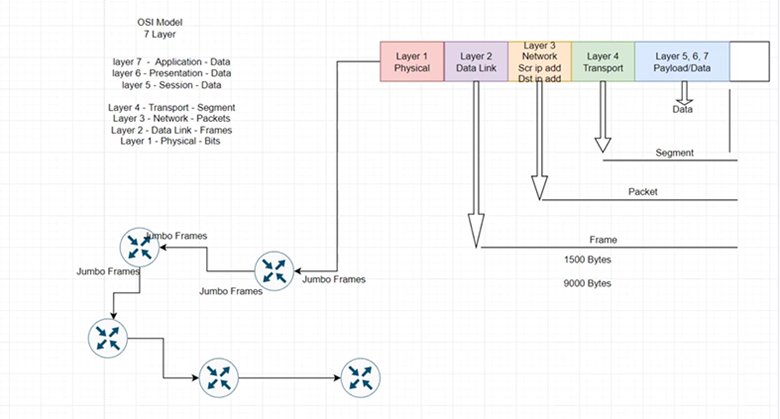

En la sexta semana se comenzó con la torre de Networks, donde se verá un repaso y se profundizará en las herramientas manejadas por Endava en métodologia de redes.

Qué es una red?
Una red es un conjunto de equipos/computadoras conectadas entre sí, utilizando distintos métodos de conexión como pueden ser cables, ondas, o fibra óptica. Con el objetivo de compartir información, archivos y demás recursos para facilitar las tareas de los usuarios.
Modelo OSI
Anteriormente en el nacimiento y apogeo de las redes/comunicaciones cada fabricante realizaba su propio protocolo de comunicación entre sus propios equipos, esto con la finalidad de si alguna empresa compraba sus equipos estaba en la obligación de seguir comprando a dicho fabricante. No existía por tanto una estandarización de comunicación, por lo cual la ISO propuso el modelo OSI para levantar esta barrera y permitir que los equipos de cualquier fabricante pudieran comunicarse entre sí.
Por tanto, el modelo OSI es un conjunto de pasos que permitirá la comunicación entre dos o más dispositivos informáticos. Consta de 7 capas que donde la información tiene que ir una por una para llegar hasta su destino.
- Capa 7 Aplicacion: Es la capa que como usuario Final vemos, es donde las aplicaciones funcionan y a partir de estas enviamos o solicitamos información a otros dispositivos.(FTP,mail, youtube, etc.)
- Capa 6 Presentación: Es la capa que se encarga de traducir el formato de la información que estamos solicitando o enviando.
- Capa 5 Sesión: Maneja la conversación entre nuestro dispositivo y el dispositivo remoto. Abre la comunicación entre dos dispositivos.
- Capa 4 Transporte: Se encarga de segmentar los datos enviados, en paquetes para enviar la información y si se pierde un paquete sea capaz de volver a pedir ese paquete.
- Capa 3 Red: Se encarga de direccionar y encontrar la mejor ruta para el envio de los paquetes.
- Capa 2 Enlance de datos: Convierte toda la información en datos binarios
- Capa 1 Física: Se encarga de enviar la información de máquina a máquina. Transmisión binaria
Modelo TCP
Surge del modelo OSI, combinando las últimas 3 capas en una única capa de aplicación, y de igual forma combinando las dos primeras capas, en una única capa de network.
IPv4 Y Subnetting
A nivel de capa 3 se conoce el protocolo Internet Protocol o protocolo IP, encargado de asignar direcciones a nuestros dispositivos finales, la dirección IP está conformada por una dirección y una máscara de red que divide la dirección entre bits de red y bits de host. La dirección IP está conformada por 4 octetos de 8 bits cada uno, donde se representa de forma decimal y con puntos diviendo los octetos.
Clases de IPv4
Dentro de IPv4 existen 4 categorias generales donde se puede ubicar de manera natural una dirección IP, las cuales son:
- Clase A
- Clase B
- Clase C
- Clase D: Utilizado para multicast
- Clase E: Propositos experimentales
Cada una de estas categorias cumplen ciertas funciones y caracteristicas, y por tanto si vemos alguna dirección IP donde el primer octeto caiga en una de estas clases, podemos empezar a especular que tipo de red estamos dialogando.
Broadcast, Multicast, Unicast
Una forma de comunicación entre un servidor y los dispositivos finales es por medio de una comunicación Broadcast, multicast o unicast. Broadcast es utilizado cuando se quiere enviar un paquete a todos los dispositivos finales que se encuentren dentro de la red. Multicast por otro lado enviará este paquete únicamente a los equipos que se encuentren dentro de un grupo especifico. Finalmente, Unicast permite una comunicación entre el servidor y un único dispositivo final.
Protocolo ARP
El protocolo ARP es un protocolo que nos permite conocer la dirección MAC de un equipo al cual desconocemos dicha dirección. Esto debido a que para poder enviar un paquete de manera satisfactoria entre dos equipos, se deben conocer tanto la dirección IP y dirección MAC tanto del recepto como del emisor.
Pasos para calcular Subnets
Para calcular el rango de direcciones IP que se pueden utilizar en una subred es necesario conocer el octeto interesante, este octeo es el octeto donde tendremos bits tanto de red como de host, una vez identificado podemos obtener el tamaño del bloque de red, que determina el tamaño de cada subred y finalmente determinamos la primera subred seteando todos los borrowed bits a 0.
VLAN
Las VLAN son redes de área local creadas de manera virtual que existen únicamente a nivel de software, la creación de estas redes nos permite separar tráfico de distintos grupos, esto con el objetivo de tener una mayor seguridad y aislamiento de la información enviada
Si se quiere enviar un paquete desde el PC de Acct en el segundo piso hasta el PC de Sales en el primer, el trafico debe salir desde la PC, ir por ambos switches y llegar hasta al router para poder ser redireccionado debido a que no se encuentra en la misma VLAN, una vez llegado al router este lee la VLAN destino y la redirecciona a su correspondiente destino.

Hay varias razones importantes para utilizar VLAn, el primero es segmentación nos permite separar dos departamentos o redes. El segundo es por seguridad, nos permite aislar el tráfico de las distintas redes sin temor a tener leaks de información, entre otras razones.
Trunk
Un concepto importante de las VLAN son los puertos Trunks por donde toda la información debe transitar con su respectivo tag, dicho tag es asignado por medio del estándar 802.1q que es un estándar de encapsulamiento para la identificación y asignación de tags en los frames.
Existe el termino de Jumbo Frame, sin embargo es una práctica no recomendada debido a que se necesitan configurar todos los equipos para poder hacer uso de la misma, configuración que muchas ISP cobran por realizar
PortChannel
PortChannel, es una tecnologia que nos permite combinar enlaces de red a nivel de switch o capa 2, para aumentar el bandwidth o asegurar High availability cuando son criticos los frames compartidos entre switches. El portchannel nos permite de igual forma crear un balanceador de cargas de tráfico por lo que una conexión no estará saturada ni olvidada en el tiempo.
Existen 2 principales protocolos, PAgP, Port Agregation protocol, es un protocolo desarrollado por Cisco para sus switches, y LACP, Link Aggregation Control Protocol, el cual es un estandar que utilizan la mayoria de vendors dentro de sus switches. Estos protocolos nos permiten conectar hasta 8 links de manera redundante y hasta 8 adicionales que funcionan en Stand By por si algunos de estos llega a fallar.